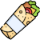

¡Ayuda a Ricardo a volver a casa!
Ricardo lleva toda la noche de fiesta junto al resto de Ricardos y ahora quiere volver a casa. De camino le ha entrado hambre y quiere comerse un kebab. ¡Pero se ha gastado todo el dinero en copas! ¡Ayúdale a rebuscar en la basura!
- Clicka sobre Ricardo para ayudarle a levantarse y poder moverse.
- Estadísticamente, cada 4 segundos alguien tira un kebab a la basura. Lleva a Ricardo hasta allí. Pero ya conoces la regla: a los 3 segundos ya no será comestible y no se podrá comer.
- Cada 4 kebabs (100 puntos) que Ricardo se coma, engordará un poco
- Si llega a comerse 12 kebabs (300 puntos), entrará en la fase de obesidad mórbida y dejará de engordar. pero ten cuidado, no es que las calles sean más estrechas, es que él está como una foca y apenas cabrá por ellas.
- Si el gordo de ricardo llega a la increíble cantidad de 20 kebabs, empezará a necesitar comida más rápido, con lo que habrá menos tiempo para llegar a ellos. ¡Ten cuidado o podría morderte a tí!
- ¡Ricardo tiene mucha hambre! ¡Como pierda 2 kebabs seguidos acabará el juego!
- ¡Evita las paredes! Ricardo va tan borracho que como se choque con una, se desmayará hasta el día siguiente y acabará el juego.